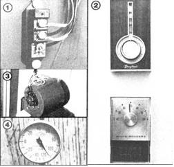
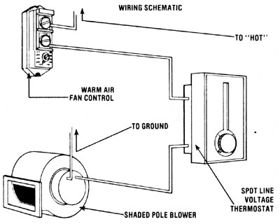

Back in MOTHER NO. 60, "Solar on a Shoestring: Mother's Corrugated Collector" featured an incredibly inexpensive solar collector which could be built from lumberyard materials. Well, that project proved to be so successful that a member of our re search team has put in a few extra hours developing an automatic control system for the "Corrugated Collector" (or most any passive sun-grabber). . . so you can take advantage of 19,000 BTU per hour without lifting a finger.
MOTHER'S AUTOMATIC COLLECTOR CONTROL
One of MOTHER's solar researchers, Dennis Burkholder, was so enthusiastic about the lowcost collector we featured in this column two issues ago that he took a day off recently to build one of the suncatchers on the side of his own home. And-not surprisingly- Dennis couldn't resist doing a little additional designas-you-go engineering with the basic corrugated collector concept.
First of all, the fearless fabricator decided to cover the whole south-facing side of his house with collector . . . including the windows. Though the view is now a bit blurry through the rippled fiberglass, neither of the affected bedrooms has suffered any significant loss of natural light. In addition-since he was about to put roughly 200 square feet of "solar furnace" into action-Dennis increased the vent size to 6" X 12" and ran a 10" duct through his attic . . . to drop the warm air into the center of his home. With these modifications, he was able to use a blower with a flow rate of 400 cubic feet per minute.
Well, our researcher did such a good job of reworking the collector that he soon found out his house would overheat during the middle of the day if he didn't shut the "fan" off. So the obvious next step was to set up the solar heater to work on demand. The solution is simple and inexpensive, and you can wire up one of "Dennis's brainstorms" for your own collector in about an hour or so.
The control system works by placing one temperature sensor in the living area of the house and another inside the collector, then wiring the two sensors and the blower into a series circuit. Thus there must be both a need for heat and sufficient warmth on hand in the collector before the blower will switch on.
You can start the installation by lifting the upper panel of corrugated fiberglass (if you've already built your corrugated collector) to expose a point about a foot from the top, and two "channels" over from the air intake. Drill a 1/2" hole through the Thermax insulating board and the wall, and run two wires through the opening. Then use screws to fasten a 70-160°F warm air fan control to the collector surface, and attach each of the wires to a pole on the control. The positive wire will go to a power source inside the house, and the neutral wire will connect to one terminal on a 115V thermostat located near the main thermostat for your heating system. (WARNING: Before you make the "hot" connection to your home's electrical system, BE SURE TO SHUT OFF THE CIRCUIT BREAKER FOR THAT SECTION OF YOUR ABODE'S WIRING TO AVOID SHOCK.)
Once the hot-wire/control/thermostat circuit is complete, you can set the temperature scale on the collector's sensor to about 120-130°F and close the corrugated fiberglass again. Next, run a wire from the remaining lug on the interior thermostat to the positive pole on the blower, and then connect the ground post on the fan to any available ground in your house's wiring.
Now you can flip the circuit breaker back on again and set the interior thermostat to a temperature a few degrees higher than your main furnace control. As long as there's heat in the collector, your energy-consuming traditional heating system will be taking a moneysaving rest. As a matter of fact, Dennis has found that-on a clear, crisp winter day-the blower will kick in as soon as 20 minutes after sunrise and keep his home warm all day long. And best of all, his heating bills have already dropped from $90 per month to a little under $40!
|
 |
 |
|